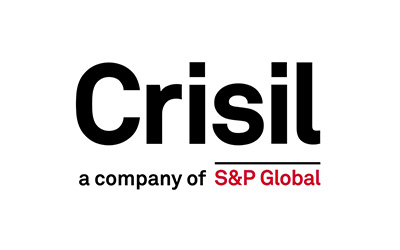
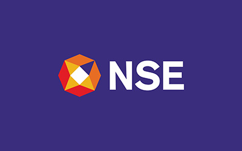

The BBA in Business Analytics at PES University is a future-ready undergraduate programme that brings together Business Management, Data Analytics, Artificial Intelligence and emerging technologies. Designed for students who want to understand both how businesses work and how data can transform business decisions, the programme develops analytical thinkers, problem-solvers and future business leaders.


Duration:
4 Years (8 semesters)
Affiliation:
PES University
Campus:
Ring Road Campus
Ranked #1
#1 University in Karnataka (New Universities under 5 years) by KSURF
PESU is NAAC A+ Accredited
PES University is accredited with A+ grade in NAAC, a national level accreditation body which is an autonomous institution under University Grants Commission (UGC)
Ranked #1
#1 B School in Karnataka – Times of India B School Rankings 2021
India's Most Preferred
PES is the second most preferred destination next to IIMB for B-School aspirants – Times of India
Eligibility
50% aggregate score in 10+2 or equivalent in any stream from a recognized board.
Get In Touch
Have questions about BBA in Business Analytics (Hons) admissions?
Share a few details and our admissions counsellors will walk you through eligibility, fees, scholarships and the application timeline — no obligation.
- Fast Response — a counsellor calls back within 24 hours.
- One-on-One Guidance — personalised help with eligibility and documentation.
- No Obligation — ask questions before you decide to apply.
Enquire Now
Fill this in and we'll reach out shortly.
Overview
BBA in Business Analytics (Hons)
The BBA in Business Analytics is a 4-year undergraduate program that combines Business Management with Data Analysis, equipping students to analyse datasets, identify trends, and make data-driven decisions. PES University is ranked as the second most preferred destination for B-School aspirants after IIMB (Times of India). Graduates enjoy exceptional career prospects in fields like finance, marketing, healthcare, and technology, with high demand from leading global companies. The program prepares students to adapt and lead in today’s dynamic business environment.
The university has always been quick to embrace new technologies and education programs that will up students game in the dynamic world of today and stay abreast of new innovations and trends giving them the platform to be potential leaders and assets to the economy and the organizations where they work


Why PES University
Program Differentiators (PESU X Factors)
Research Papers
Encourages students to author impactful research papers, blending academic rigour with industry relevance.
Case Studies
Real-world business problem analysis with practical solutions, Peer to Peer Learning approach
Exposure
Conclaves and Summits, Guest lectures, B-Talks and E-Talks, Hackathons, Studyathons, Tech competitions, Alumni Interactions, and Entrepreneurship Development Activities, Curricular and Co-Curricular Forums and Committees, Industry Visits
Mentoring
2 one-on-one mentoring per semester
Certification
Certifications in Project Management, Design Thinking , Operations ML, Google Analytics, Advanced Excel /SPSS/JMP, Gurobi for optimization, KNIME for data mining, Apache Spark for data processing, Risk Assessment, Business Process Automation, Project Management Cloud Computing and many more
About the Programme
Where Business Meets Data, AI & Innovation
Students learn to move from data to insights, insights to decisions and decisions to impact. With a strong foundation in business management and progressive exposure to analytics and technology, students develop the confidence to solve real-world business problems and thrive in a rapidly evolving digital economy.
Our curriculum evolves with the changing needs of business and industry. Students build a strong foundation in Business Management, Statistics, Mathematics for Data Science, Data & Decisions, Operations Research, Project Management and Business Research, before progressing into advanced analytics and technology-led learning.
Students gain hands-on expertise in:
Python | SQL | R | Excel | Power BI | Tableau | Cloud Computing | Machine Learning | Artificial Intelligence | Generative AI | NLP | Big Data | Data Engineering | Agentic AI
The programme also enables students to apply analytics across key business domains:
Marketing Analytics | Financial Analytics | HR Analytics | Supply Chain Analytics | International Business | Business Intelligence | Data Visualisation | Predictive Analytics
Curriculum
A Curriculum Built for the Future
About the Programme
Business Analytics Across Every Function
Analytics is no longer confined to a single department—it is transforming every aspect of business. Our students are prepared to apply data and technology across Finance, Marketing, Human Resources, Operations, Supply Chain, Strategy, Consulting and Entrepreneurship.
This multidisciplinary approach gives students the unique ability to speak the language of both business and technology.
From internships and industry interactions to live projects and business challenges, students gain continuous exposure to the realities of the workplace. The programme develops not only technical skills but also communication, leadership, critical thinking, problem-solving, teamwork and decision-making.
With a legacy of 50+ years of education, innovation and excellence, PES University continues to embrace emerging technologies and evolving industry needs. From Perseverance, Excellence and Service to AI, analytics and next-generation business education, the University provides students with an ecosystem to learn, experiment and lead.
The programme prepares students for diverse careers such as:
Business Analyst | Data Analyst | Business Intelligence Analyst | Marketing Analyst | Financial Analyst | HR Analytics Professional | Analytics Consultant | Data & AI Professional | Strategy Analyst | Product Analyst
About the Programme
Industry-Ready by Design
About the Programme
Why BBA in Business Analytics at PES University?
About the Programme
Learn. Apply. Analyse. Innovate.
At PES University, learning extends well beyond the classroom. Students engage in real-world case studies, live business projects, internships, research projects, hackathons, industry visits, conclaves, B-Talks, guest lectures and experiential learning initiatives.
Through our progressive learning approach, students learn to:
01Analyse complex business and customer data
02Visualise information and communicate insights effectively
03Build data-driven solutions to real business challenges
04Apply AI and analytics to business functions
05Research emerging business and technology trends
06Collaborate with peers, faculty and industry
07Present insights and recommendations with confidence
About the Programme
What Sets Us Apart?
Renowned Faculty:
Blend of academic excellence and industry experience. The faculty have a rich industrial exposure, with highest qualification in their respective domains and are also highly enthusiastic towards hybrid and new learning models which carter the needs of the industry
Cutting-Edge Infrastructure:
Smart classrooms and advanced analytics labs
How We Teach
Pedagogy
We at PES University have constantly modified our syllabus and subjects to suit the current industry trends and at the same time lay a strong foundation to the basic concepts of the respective subjects. We have industry experts in our panel who provide their expertise in setting the syllabus for the batches.
The pedagogy prioritizes practicality and real-world application, laying a strong foundation in business and management principles. Led by dedicated faculty, the program offers diverse experiential learning opportunities to enhance students' understanding and application of business concepts.
Additionally, students participate in industrial visits within Bangalore each semester, gaining firsthand insights into industry operations.
Moreover, students engage in certification courses, real time projects, and workshops to supplement classroom learning with practical skills. The teaching methodology incorporates case studies, fostering critical thinking and problem-solving abilities.
Overall, the program provides a comprehensive teaching-learning process that emphasizes practicality and real-world experience. Through internships, industrial visits, certification courses, case studies, seminars, workshops, Application based worksheets and technology-driven aids, students are well-prepared to navigate the complexities of the business landscape.
The curriculum is meticulously designed to blend foundational business knowledge with advanced analytical skills
| MAJORS | MINORS | Special Topics(Optional) |
|---|---|---|
| Excel Modelling | Marketing | Financial Modelling |
| Six Sigma for Business Excellence | Finance | Commodity Market trading |
| Cloud Computing | Human Resource Management | Econometrics |
| ML with Python | International Business | EXIM Management |
| Statistics with R | Family Business & Entrepreneurship | Six Sigma |
| Python Programming | Crypto and Block Chain | |
| SQL | Excel Models | |
| SAS and Tableau | Supply Chain Analytics | |
| ML with R | Leadership | |
| Machine Learning & AI | Health Analytics | |
| Social Media Analytics | Actuarial Science | |
| Natural Language Processing | Design Thinking | |
| Big Data Analytics | ||
| Marketing Analytics | ||
| HR Analytics | ||
| Financial Analytics | ||
| Data Analytics and Google Analytics | ||
| Supply Chain Analytics |
About the Programme
Exposure

BTalks & ETalks
The BBA program provides an immersive learning environment through various exposure avenues. Guest lectures by professors of practice offer valuable insights into industry trends and real-world practices, in the form of B talks and E talks.
Business Hackathons
Encourage innovation and problem-solving, fostering practical skills essential for career skills. It's a high-energy environment that encourages creativity, teamwork, and rapid prototyping and prioritize the application of technology to solve real-world business challenges.
Entrepreneurship Development
Activities nurture students' entrepreneurial spirit and equip them with the knowledge and skills to embark on business ventures, through our Incubation and Acceleration Programs through Alumni interactions and networking sessions, Family Business conclaves, B Plan Competitions, start up melas, Incubation centers.
Conclaves & Summits
Conclaves & Summits serve as platforms for dialogue and collaboration, fostering intellectual exchange and professional growth. Our prominent summits were:
- Brand Summit
- HR Summit
- Fund Managers Summit
- Entrepreneurship Summit
- Family Business Conclave
- Analytics Summit
- CMO Summit
- Operations Summit
- Women Entrepreneur Talk
- Young Leader Summit
Community Outreach
Programs like CSR activities, DEI Initiatives Social Internship Programs, Service-learning approach Club communities and studyathons promote collaborative learning and skill enhancement outside the classroom, encouraging holistic development among students.
Clubs Activities
Student Forums and Activities: Department have 15 + Curricular and Co-Curricular Forums and Committees-Business Analytics club, HR club, Marketing Club, IB Club, Finance Club, Economics Club, Entrepreneurship Development Cell , and Co- Curricular clubs- Cultural, Sports, Creative, Social, Photography, Drama are led and run by students who are passionate about the domains, and frequent events are organised, as we believe in students holistic development.
Industry Visits/ Chamber /Conference/CII Visits.
Our students are exposed to Industry visits that provide them with real-world exposure to business operations, bridging the gap between theoretical learning and practical application that enhance understanding of industry standards, professional practices, and career opportunities.
Graduate Outcome
Personalised Pre-Placement Training for all students in the following modules for students opting for placements:
- Weekly Aptitude Test
- Weekly Subject Exam
- Mock Interviews by Alumni
- Mock Interviews by the Faculty mentor
- Mock GD
- CXO and Guest Networking
Higher study workshops with foreign universities & Career Options Workshop helps guiding students through the process of studying abroad, highlighting universities, courses, scholarships, visa procedures, and help students make informed decisions about their academic and professional futures.
Students interested in startup will be facilitated with Bootcamps, Workshops, and Sessions on Business Planning, Pitching, Funding, and Scaling Ideas.
Placements
Placement Opportunities & Career Assistance
PES University boasts an exceptional placement record, with graduates placed in top companies offering competitive packages. Our dedicated placement cell ensures students are industry-ready with resume-building workshops, interview preparation sessions, and access to a strong alumni network. Recent placements highlight opportunities with global giants in technology, finance, and consulting sectors.
Extensive placement training and career counselling to ensure industry readiness. Top recruiters include: Deloitte, Capgemini, HSBC, Altair, Visionet Systems, IBM, Accenture, Wipro, And many more...





Careers
Career Prospects
01Data Analyst
02Supply Chain Analyst
03Big Data Analyst
04Business Analyst
05Marketing Manager
06Personal Financial Advisor
07Management Consultant
08Management analyst
09Enterprise analyst
10Business systems analyst
11Systems analyst
12Business intelligence analyst
13Business process analyst and many more
Curriculum
Curriculum Structure
- Environmental Studies & Life Sciences
- Financial Accounting
- Data and Decisions-I
- Marketing Management
- Mathematics for Data Science-1
- Spread sheet Modelling
- Data and Decisions-II
- Human Resource Management
- Design Thinking & Innovation Management
- Mathematics for Data Science-II
- Economics for Managers
- Constitutional Law, Cyber Law, IP Law and Professional Ethics
- Operations Research for Managers
- Essentials & Innovative Entrepreneurship-I
- MySQL (Structured Query Language)
- R for Business
- Sustainability, ESG & Climate Business
- Social Internship
- Sales and Distribution Management
- Cost Accounting
- Managing Disruptive Technology in Talent Acquisition
- Global Business Environment
- Supply Chain Analytics
- Python for Managers
- SAS with Power BI
- Business Research Methods
- Corporate Communication
- Essentials & Innovative Entrepreneurship-II
- Digital & Social Media Marketing
- Management Accounting
- Organizational Change & Development
- Mergers & Acquisitions
- Certification Course in Tableau
- Big Data Analytics
- Machine Learning and Artificial Intelligence
- Natural Language Processing
- Corporate Internship
- Choice of any one Elective
- Integrated Marketing Communication
- Retail Management
- Derivatives and Risk Management
- Foreign Exchange Management
- Industrial Relation and Legal Aspects
- Compensation and Reward Management
- EXIM Procedure and Documentation
- HR Analytics
- Marketing & Social Media Analytics
- Information Security & Data Privacy
- Data Engineering & Generative AI
- Financial Analytics
- Quantum Computing
- Certification Course in Prompt Engineering
- Cloud Computing
- Agentic AI
- Capstone Project
- Dissertation
Financial Support
Merit scholarships, awarded on performance
Over ₹140 crores in merit scholarships have been given to PES University students since 2014.
Merit Scholarships
Awarded on CGPA / SGPAScholarship
50%
Prof. MRD Scholarships
Merit Certificate + 50% Tuition Fee Refund for Top 5% of the Students based on their CGPA.
Scholarship
40%
Prof. CNR Rao Scholarships
Merit Certificate + 40% Tuition Fee Refund for the next 20% of the Students based on their SGPA.
Scholarship
7.75+
Distinction Awards
Merit Certificate for Students securing 7.75+ SGPA.
PES Loyalty Program
Awarded on family / institutional ties, every year of studyLoyalty
30%
PES Employees
Children of full-time staff, 5+ years employment.
Loyalty
20%
PES Institution Students
Graduates of any PES institution or sister concern.
Loyalty
10%
Siblings of Students
Siblings of currently enrolled PES students.
Loyalty
10%
Alumni Family
Siblings and children of PES University alumni.
University Highlights
Recognition beyond the programme
The accreditations and rankings behind PES University as a whole.
Ranking
#1
University in Karnataka
Among new universities under 5 years, ranked by KSURF.
Accreditation
A+
NAAC Accredited
PES University holds NAAC's top-grade accreditation nationally.
Ranking
#1
B-School in Karnataka
Times of India B-School Rankings, 2021.
Recognition
2nd
Most Preferred B-School
Second only to IIM Bangalore among B-School aspirants, per Times of India.